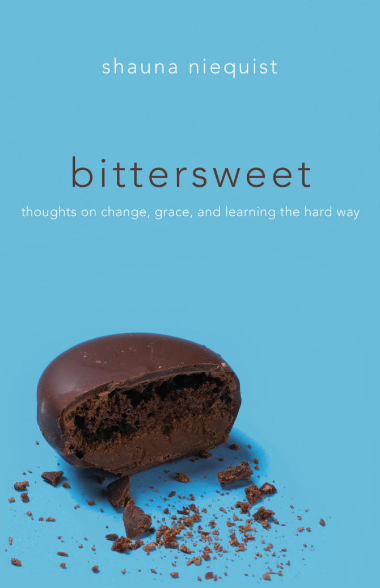
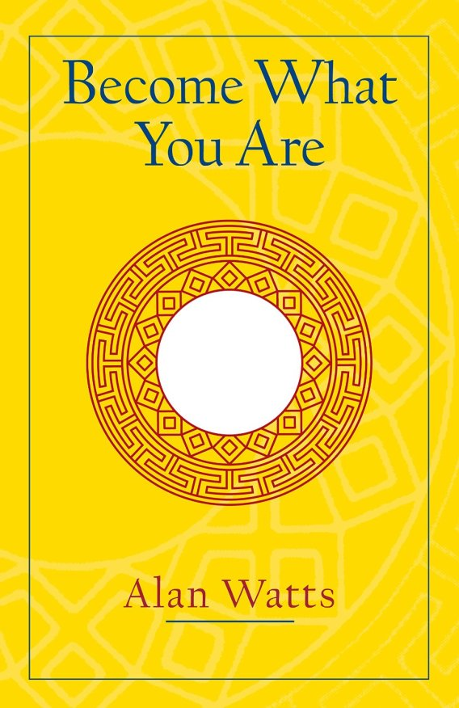

Bittersweet: Thoughts on Change, Grace, and Learning the Hard Way- Shauna Niequist
Don't get stuck. Move, travel, take a class, take a risk.
There is a season for wildness and a season for settledness, and this is neither.
Become What You Are-Alan Watts

A man does not really begin to be alive until he has lost himself, until he has released the anxious grasp which he normally holds upon his life, his property, his reputation and position.
The Anatomy of Being-Shinji Moon
I look at you and see all the ways a soul can bruise, and I wish I could sink my hands into your flesh and light lanterns along your spine so you know that there's nothing but light when I see you.
Stumbling on Happiness-Daniel Gilbert
Perhaps the strangest thing about this illusion of control is not that it happens but that it seems to confer many of the psychological benefits of genuine control. In fact, the one group of people who seem generally immune to this illusion are the clinically depressed, who tend to estimate accurately the degree to which they can control events in most situation.
The Art of Happiness-The Dalai Lama
If you want others to be happy, practice compassion. If you want to be happy, practice compassion.
The Creative Habit: Learn It And Use It For Life-Twyla Tharp
I read for growth, firmly believing that what you are today and what you will be in five years depends on two things: the people you meet and the books you read.